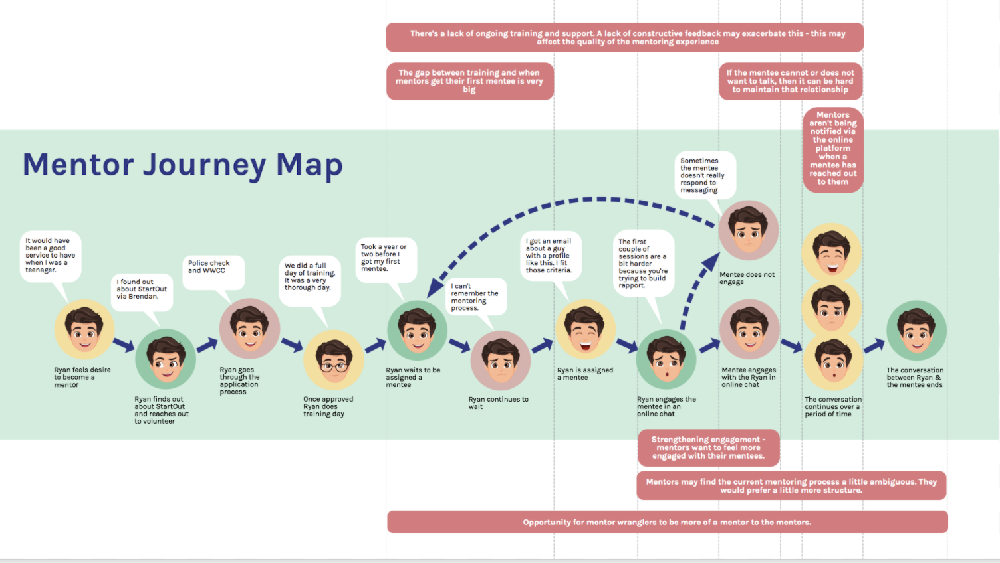

StartOut Australia
Empowering DSG Youth through Online Mentorship
StartOut Australia is a Health Promotion Charity focused on reducing
the burden of poor mental health for young people of diverse sex,
sexuality or gender (DSG). It has an online mentoring platform to
help anonymously mentor people, providing a safe, socially inclusive
and welcoming space to engage and support the well-being of young
DSG regardless of location.
Our mission is to enhance the online mentoring platform experience,
supporting mentors in fostering deep, meaningful conversations with
young people of diverse sex, sexuality, or gender (DSG). The
platform aims to help mentees build resilience, self-acceptance, and
a positive self-image. We had two weeks to research, design,
prototype and test a product for them. This project has also been
done remotely.
Project type:
Academy XI
My role
UX/ UI designer
Deliverables
UX research, mentor journey map, wireframes, prototypes, usability testing, visual design and presentation
Tools
Miro, Zoom and Figma
Duration
2 weeks (April 2020)
Project goals
- Increase engagement between the mentor and the mentee.
- Increase the level and depth of the conversation between both parties.
- Increase the length and quality of mentoring relationship.
Research discoveries
User surveys
We conducted interviews with mentors via zoom meetings. Unfortunately, we are unable to interview the mentees because they are anonymous. We discovered that:
Key findings and insights
- Lack of ongoing training and support.
- The gap between training and when mentors get their first mentee is enormous (3 months to 1 year)
- Mentors aren't notified via the online platform when a mentee has reached out to them.
- Mentors may find the current mentoring process a little ambiguous. They would prefer a little more structure.
- If the mentee cannot or does not want to talk, it can be hard to maintain the relationship.
Mentor journey map
Ideation & Wireframes
Based on user needs and journey mapping, I crafted wireframes with the following features:
- Session Prep Toolkit: A resource hub that provides conversation starters, topic guides, and training refreshers to mentors.
- Mentee Progress Tracker:Visual indicators that allow mentors to follow mentee growth, showing achievements or moments of self-acceptance.
- Reflective Journaling: A feature that lets mentors take notes and record conversation highlights, fostering continuity in future interactions.
- End chat buttonThe mentee can click the button when they are no longer communicating with the mentor.
Testing & Iteration
Usuability highlights:
- Postive feedback: Mentors appreciated the Session Prep toolkit and noted that it helped them feel more equipped to start difficult conversations.
- Iteration Based on Feedback: Based on feedback, we streamlined access to resources within sessions, ensuring mentors could reference the toolkit without interrupting the flow of conversation.
Key improvement:
- Interactive Conversation Tools: Introducing conversation prompts, guided questions, or visual mood check-ins could help mentors and mentees connect more deeply. These tools could support mentors in initiating and sustaining meaningful discussions, even around sensitive topics.
- Resource Hub for Mentors: Having an accessible library with resources, training refreshers, and content on specific challenges DSG youth may face would equip mentors with the knowledge to handle complex situations confidently and empathetically.
Results and Reflections
Impact:
The redesigned platform enables mentors to foster deeper, more impactful conversations, helping DSG youth feel seen and supported. Both mentors and mentees reported feeling more connected, with mentees noting that the new tools made it easier to open up.
What I learned
This project highlighted the importance of designing with empathy, especially for vulnerable groups. Working closely with mentors and StartOut team helped me understand how small design decisions can have a profound effect on user confidence and comfort.
Project takeways
The "StartOut" project illustrates my commitment to designing
inclusive, supportive experiences. By prioritising empathy and
accessibility, I focused on creating a platform that empowers mentors
to help DSG youth embrace their identities confidently. While I
centered much of the design around the mentor’s perspective, I am
eager to further explore the mentee experience.
Unfortunately, I didn’t have the chance to interview mentees for this
project, but I recognize the immense value their insights would bring
to enhancing the platform. In future iterations, I hope to incorporate
mentee feedback to ensure their unique needs and voices are fully
represented.